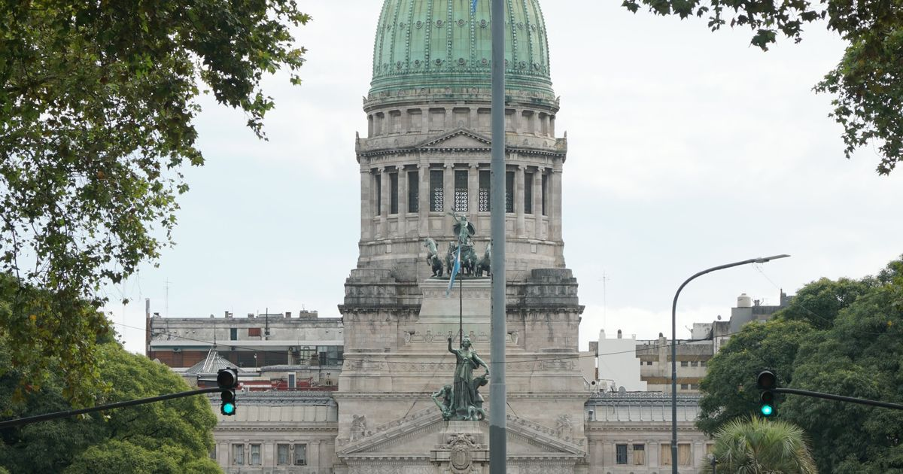

La Cámara llevó al Congreso el pedido de un IVA diferencial para el turismo
El presidente José Alberto Suárez expuso ante la Comisión de Turismo de la Cámara de Diputados de la Nación tres propuestas para la competitividad de los destinos turísticos.

Invitado por los diputados Pablo Todero y Mirna Gómez, Suárez planteó una alícuota diferencial de IVA para la actividad turística, un plan sostenido de infraestructura turística dentro de los futuros acuerdos fiscales entre Nación y provincias, y una revisión de la coparticipación que reconozca a las ciudades turísticas el costo de prestar servicios a una población temporal muy superior a la permanente. En la misma línea, la Cámara ya había pedido al Gobierno neuquino reducir Ingresos Brutos para el turismo.
Fuente: La Angostura Digital, 14/10/2026
Compartí esta nota: https://camaravla.org.ar/noticias/2026-10-congreso-iva-turismo